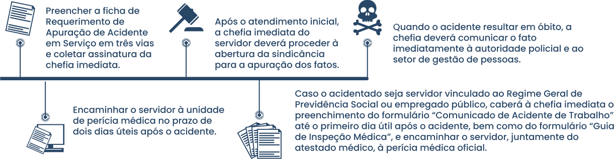

TÓPICO 2
O PROCESSO DE TRABALHO E SAÚDE-DOENÇA DOS TRABALHADORES DA APS
TÓPICO 2
O PROCESSO DE TRABALHO E SAÚDE-DOENÇA DOS TRABALHADORES DA APS
IMPORTANTE
É importante destacar que tanto as doenças profissionais como as doenças do trabalho são equiparadas a acidente de trabalho e devem ser notificadas, conforme determina o Decreto nº 34.023, de 10 de dezembro de 2012.
Assim, se um servidor for acometido por um acidente de trabalho ou doença profissional ou do trabalho, é necessário:
